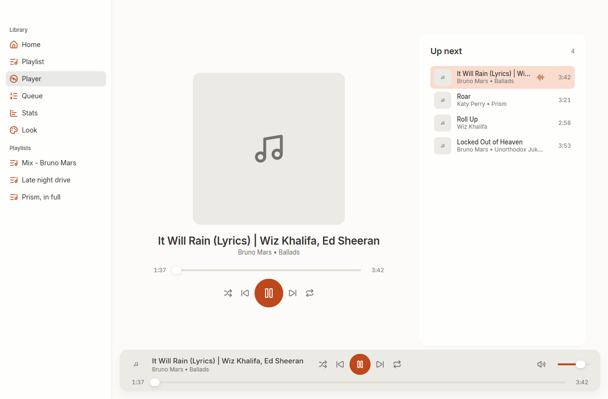
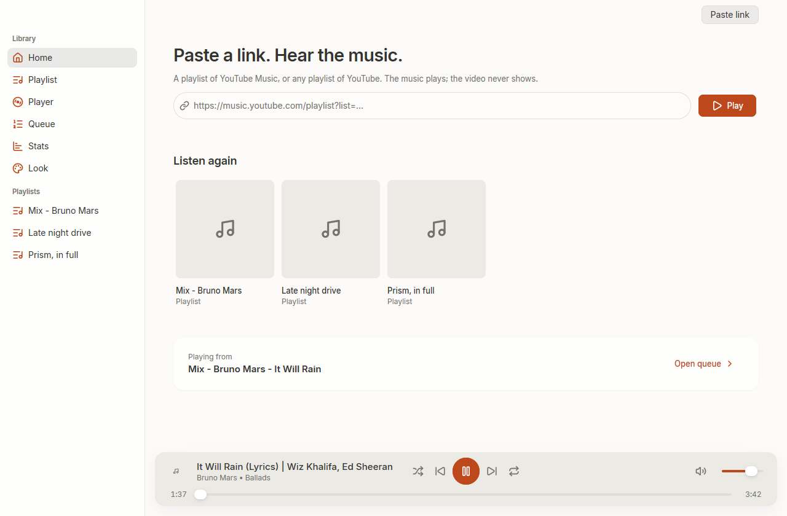
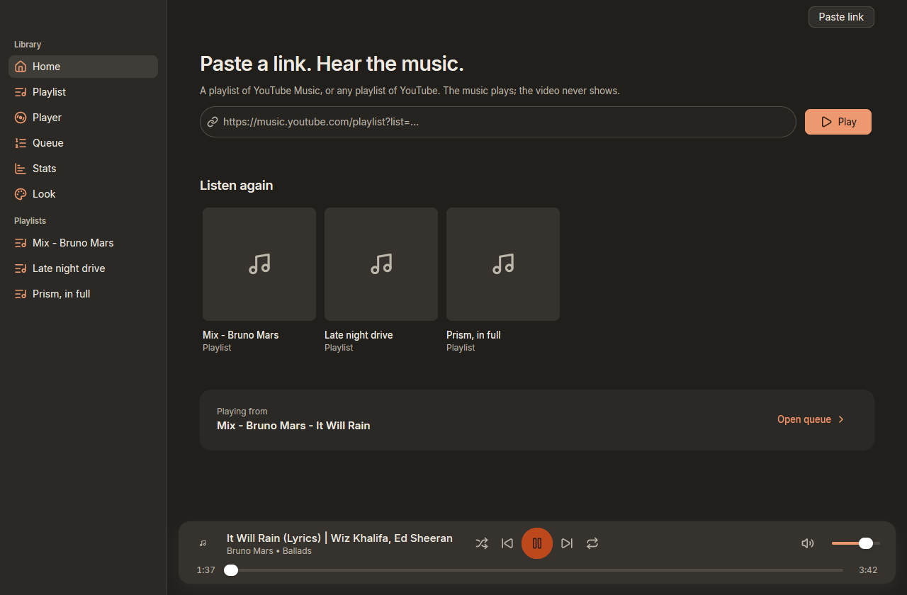
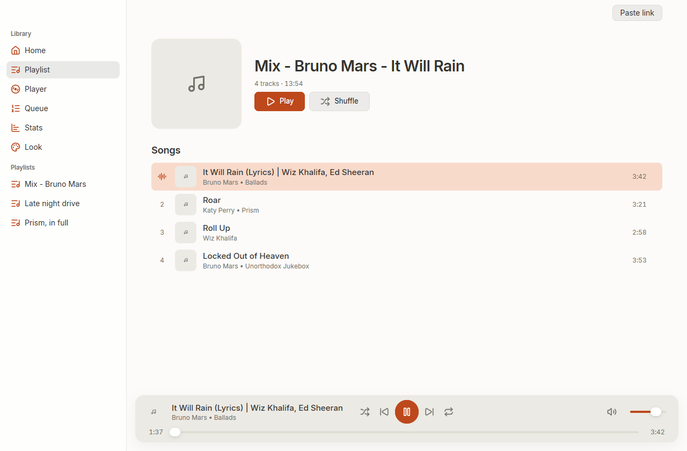
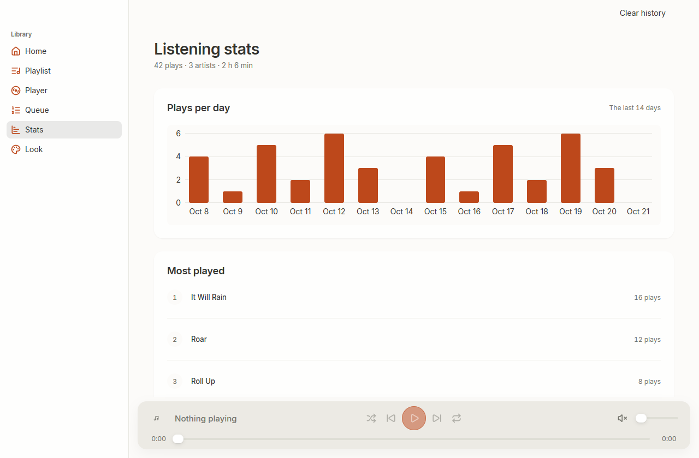
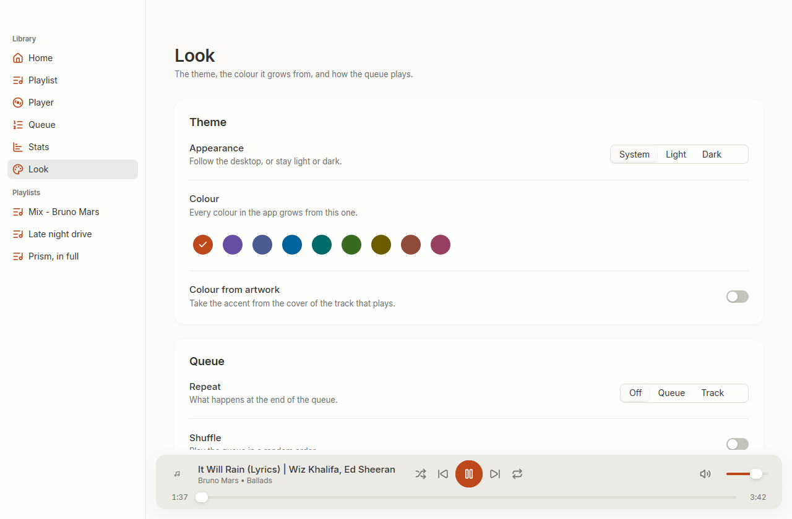

It picks up where you stopped
Close the window and the music keeps playing from the notification area. Quit it and the next run opens the same playlist, on the same track, at the same second.
A native desktop player for YouTube playlists. Not a browser tab, not a wrapper around one: a window that plays the music and nothing else. No ads, no account, no web page loading behind the sound.
Free and open source. Windows, macOS and Linux.

The playlist is read from YouTube's own catalogue, the audio is found by
yt-dlp and decoded by ffmpeg, and the sound goes
straight to your speakers. The video never loads.
Close the window and the music keeps playing from the notification area. Quit it and the next run opens the same playlist, on the same track, at the same second.
A playlist you have opened is kept on disk, so opening it again costs no network at all.
When a stream breaks mid-song, the app finds it again and plays on from where it stopped, instead of skipping the track.
One button on the player builds the mix YouTube generates around what you are hearing. It needs no account.
Scrobbles what you hear, once half the track or four minutes has played. Plays that cannot be sent wait on disk until they can.
The track, the artist, the album and a progress bar, in the panel your friends already see. With a time bar, not a stopwatch.
Eight Material 3 palettes, each with a light and a dark scheme. The accent can be yours, or taken from the cover of the track that is playing.


Six pages, one window. The sidebar is the whole navigation.



Version 0.6.0. Pick the file for your machine; the release page has them all, and each one installs.
Playlist Setup 0.6.0 amd64.exe
An installer. No terminal opens.
Playlist 0.6.0 arm64.dmg
Open it, drag to Applications.
Playlist 0.6.0 amd64.dmg
The same.
playlist_0.6.0_amd64.deb
Or install it from your file manager.
playlist-0.6.0-linux-amd64.tar.gz
Unpack, then run ./install.sh.